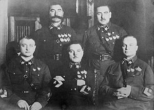
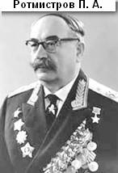
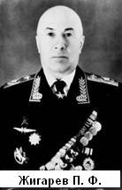
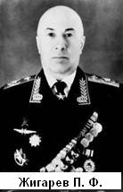

| Земляки, ставшие Маршалами.
История возникновения воинского звания маршал кратко такова.
Маршал (от старонемецкого marahscalc — конюх: от древневерхненемецкого «marah» — лошадь и «scalc» — слуга; фр. marechal) — воинское звание (или чин) высшего генеральского состава в армиях ряда государств. В некоторых странах мира (дореволюционная Россия, Великобритания, Германия, Австрия, Индия) соответствующий чин называется (назывался) фельдмаршал (генерал-фельдмаршал) (от нем. Feldmarschall, Feld- — полевой, походный, войсковой).
Первоначально сторож лошадей, или конюх (фр. marechal и поныне означает кузнеца подков). Звание Маршал рано стало одним из высших придворных чинов (comes stabuli; ср. Коннетабль); функции его во времена императора Оттона I возлагались на одно из наиболее близких к императору лиц (так назыв. Erzami). Наследственным имперским эрцмаршалом стал курфюрст саксонский, поручавший исполнение сопряжённых с этой должностью обязанностей наследственному маршалу (Erbmarschall) из семьи графов Папенгеймов. Служба его состояла в том, чтобы при короновании императора зачерпнуть из громадной груды овса серебряную меру и отнести в конюшню для коня государя. Кроме того, во время имперских сеймов и празднеств он должен был следить за порядком и за исполнением церемониала. Позже появились ландмаршалы, для председательства в собраниях земских чинов.
К главному военачальнику титул маршала был впервые применён тевтонским орденом; отсюда появилось наименование фельдмаршала, сначала для полковников кавалерии. Приблизительно в те же времена на территории Великого Княжества Литовского, королевства Польского, а позже Речи Посполитой, т.е. современных земель Польши, Украины и Беларуси появляются должности полевого гетьмана (гетьмана польного) и гетьмана королевства (гетьмана коронного). Название гетьман тоже происходит из немецкого гауптман - военачальник и вероятно также было взято из лексикона тевтонских рыцарей. Позже название гетьман в значении главного военачальника было принято Войском Низовым Запорожским (Запорожской Сечью), где оно продержалось до упразднения этой военной организации Екатериной II в 1770-х.
В это же время в военных структурах Российской империи большое влияния получают люди немецкого и западноевропейского происхождения, показателем чего является распространение соответствующей системы именования высшего командного состава в русской армии.
Знаком различия маршала во многих армиях является торжественно вручаемый символический стержень, украшенный символикой государства — маршальский жезл; скрещённые жезлы нередко составляют часть герба маршала, присутствуют на погонах и т. п. В СССР и России особым знаком различия маршальского звания является Маршальская Звезда.
Ма?ршал Сове?тского Сою?за — воинское звание в Советских Вооружённых Силах. Введено 22 сентября 1935 года постановлением Центрального Исполнительного Комитета и Совета Народных Комиссаров СССР, вводящим для личного состава Рабоче-крестьянской Красной армии (РККА) и Рабоче-крестьянского Красного флота (РККФ) персональные воинские звания. До 26 июня 1945 являлось высшим, затем предшествующим званию Генералиссимус Советского Союза (а после смерти единственного Генералиссимуса И. В. Сталина в 1953 году — снова высшим де-факто).
Соответствующее звание на флоте — Адмирал Флота Советского Союза. В некоторых специальных родах войск званию Маршала Советского Союза непосредственно предшествовало (но не было эквивалентно) звание Главного маршала рода войск).
В Российской Федерации в 1993 году установлено воинское звание Маршал Российской Федерации.

Первые пять маршалов (слева направо): Тухачевский, Ворошилов, Егоров (сидят), Будённый и Блюхер (стоят)
Первое присвоение звания Маршала Советского Союза состоялось 21 ноября 1935 года, когда высшего воинского звания были удостоены К. Е. Ворошилов, А. И. Егоров, М. Н. Тухачевский, В. К. Блюхер и С. М. Будённый.
Всего в 1935—1991 годах звание Маршала Советского Союза присваивалось 41 раз, из них 36 — профессиональным военным, 4 — политическим деятелям, занимавшим военные посты (Сталин, Берия, Булганин и Брежнев); к «политическим маршалам» можно отнести также Д. Ф. Устинова. Из перечисленных лиц только Л. П. Берия получил звание маршала не по «политическим» мотивам, а, так сказать, в рабочем порядке — вследствие того, что весь аттестованный личный состав НКГБ СССР был приравнен к военнослужащим и специальные звания государственной безопасности были автоматически заменены на армейские.
В 1943—1993 годах в Советском Союзе существовала градация маршальских званий, действовали особые советские звания маршала и Главного маршала родов войск (артиллерии, авиации, бронетанковых войск, инженерных войск и войск связи).
Представляем читателю краткие описания судеб пяти советских Маршалов, родившихся на Тверской земле.
   
 
|